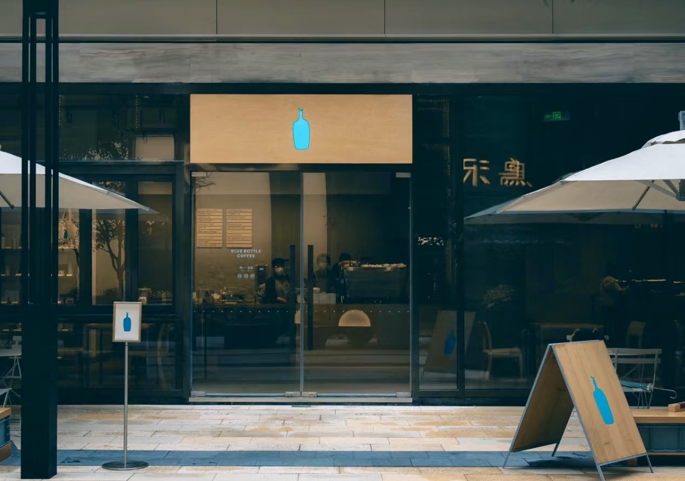
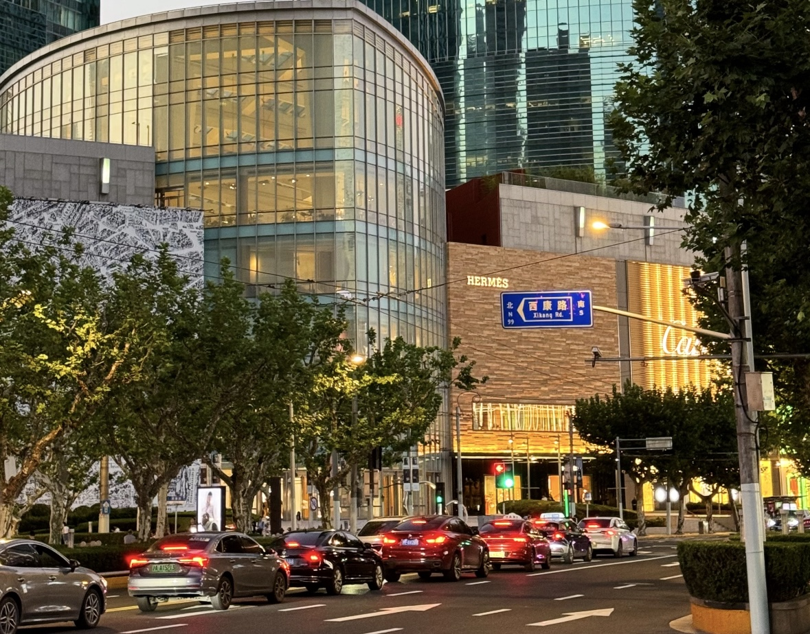

Shanghai on a Budget?
Travelers mix free/affordable street eats with efficient public transit system, making it a great destination for budget travelers. With careful planning, 300 CNY per day can cover your essentials and still leave room for memorable experiences.
Day 1: Iconic Shanghai Highlights
- Morning: The Bund (Free) - 8:00 AM, for stunning views of the Pudong skyline including the Oriental Pearl Tower. It's free!
- Late Morning: Yu Garden (40 CNY) - Spend 1 hour exploring this Ming Dynasty garden's pavilions and ponds. Stroll through nearby Shanghai Old Street for free.
- Afternoon: Nanjing Road & Lunch (15 CNY) - Head to Nanjing East Road, a bustling shopping street (free to explore). Grab lunch from a street vendor - xiaolongbao (soup dumplings) or noodles for ~15 CNY.
- Evening: People's Square & Dinner (20 CNY) - Walk to People's Square to visit the free Shanghai Museum to see ancient Chinese relics. End with dinner at a local eatery (noodles or fried rice, ~20 CNY).
- Day 1 Total: 95 CNY (excluding accommodation)
Day 2: Culture and Modern Vibes
Blue Bottle Coffee
Address: No. 1 Hongqiao Road, Xuhui District, Shanghai
- Morning: Jing'an Temple (50 CNY, optional) - Visit Jing'an Temple (entry: 50 CNY, or admire from outside for free!). This Buddhist temple's golden exterior is striking.
- Afternoon: Former French Concession & Lunch (20 CNY) - Take the metro (2-6 CNY) to the Former French Concession. Wander through Tianzifang's artsy alleys (free). Lunch on a scallion pancake or skewers (~15 CNY).
- Evening: Pudong Skyline & Dinner (20 CNY) - Return to The Bund to see the Pudong skyline lit up at night (free!). Have dinner nearby—dumplings or fried rice (~20 CNY).
- Day 2 Total: 90 CNY (excluding accommodation)
Day 3: Local Life and Serenity
Shanghai Reel
Address: Nanjing West Road, Jing An District, Shanghai
- Morning: Fuxing Park (Free) - Start at Fuxing Park, a peaceful spot to watch locals practice tai chi (free).
- Afternoon: Propaganda Poster Art Centre & Lunch (35 CNY) - Take the metro (2-6 CNY) to the Shanghai Propaganda Poster Art Centre (entry: 25 CNY) for a unique look at Maoist-era art. Lunch at a nearby eatery (noodles, ~15 CNY).
- Evening: Huangpu River Walk & Dinner (20 CNY) - Walk along the Huangpu River for free city views. Finish with dinner—stir-fried veggies with rice (~20 CNY).
- Day 3 Total: 65 CNY (excluding accommodation)
Tips to Stay on Budget
- Prioritize free attractions: The Bund, Fuxing Park.
- Use the metro, not taxis (starting at 14 CNY).
- Eat local—avoid Western chains like Starbucks (50-55 CNY/meal).
- Visit in off-season (e.g., early April) for lower prices.
Comments (6)
Hannah 3 days ago
Great guide! I love how you included so many free activities like The Bund and Fuxing Park. It really keeps costs down while seeing Shanghai's best spots. Thanks for the tips!
12Odegaard 10 days ago
Super helpful itinerary! The food suggestions are spot-on—I can't wait to try the xiaolongbao for just 15 CNY. Perfect for a budget trip!
8